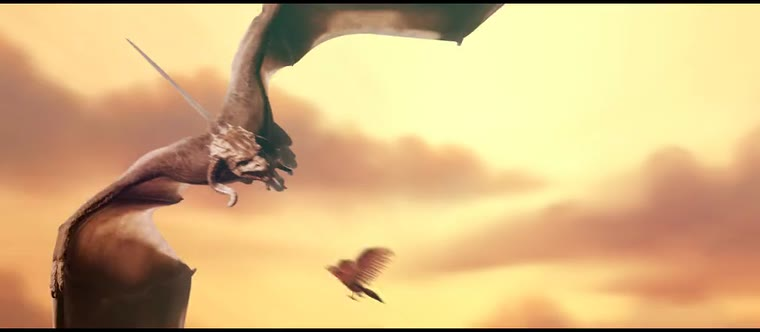
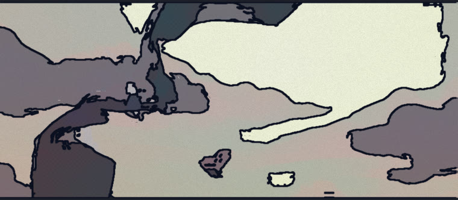

Every frame re-painted as ink on paper — flat paint bands, contours that tremble, a print-shop dot screen. The part that isn't a filter: the clip's own cuts and beats decide the ink colour, the line weight and when the drawing shakes.


# the renderer is a node program, not a site git clone git@github.com:swapagrawal14/rigpop-ink.git cd rigpop-ink npm run fetch:demo node bin/rigpop-ink.js probe demo/source-sintel.mp4 node bin/rigpop-ink.js restyle demo/source-sintel.mp4 \ -o out/ink.mp4 --preset night --seed 7 --compare npm run serve # the darkroom: scrub, sliders, live preview
Same file + preset + seed = byte-identical output. Every random thing is seeded from (seed, shot, onset count), never from time.
The darkroom is a local Node server: it shells out to ffmpeg, uses native canvas, and a 20-second clip is a ~90-second CPU job. None of that fits in a serverless function, so what you see here is rendered ahead of time by scripts/make-site.mjs — one still per preset, the before/after loop and one side-by-side clip. The live thing runs on your machine with npm run serve.